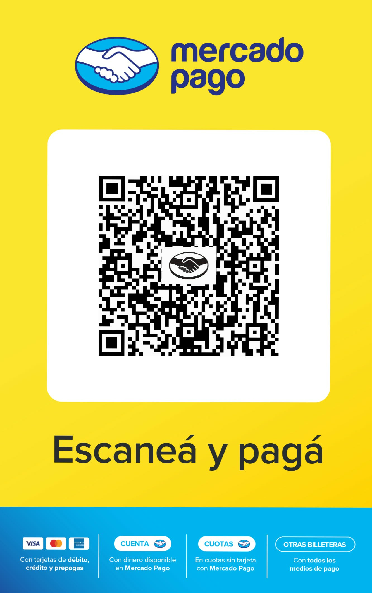

Colaborá con Sonomix Radio
Si disfrutás de nuestra programación, podés colaborar mediante una transferencia por Mercado Pago.
Alias Mercado Pago
sonomixradio
También podés escanear este código QR
Podés copiar el alias o escanear el código QR.

Escanealo desde Mercado Pago para realizar tu transferencia.